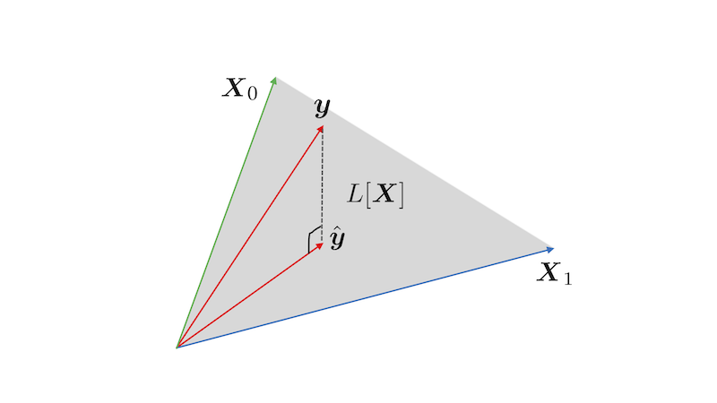
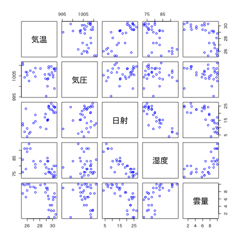
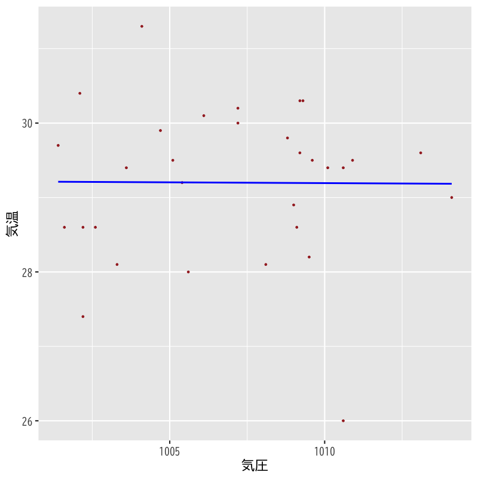
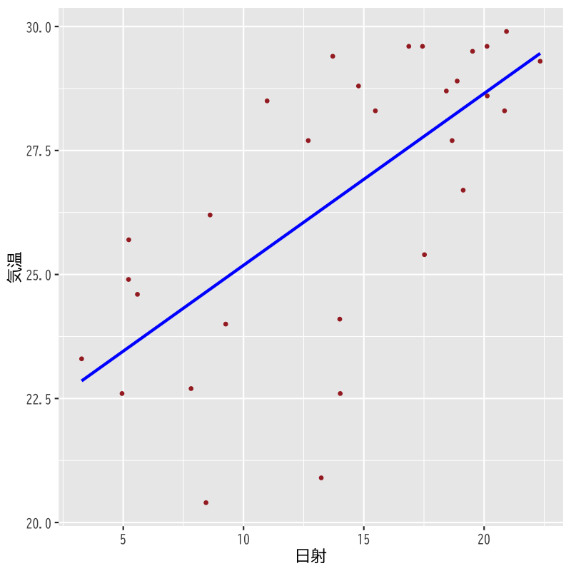
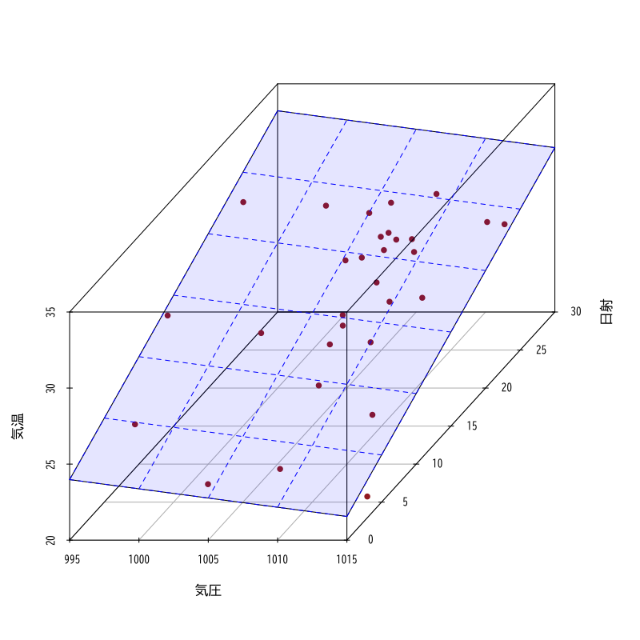
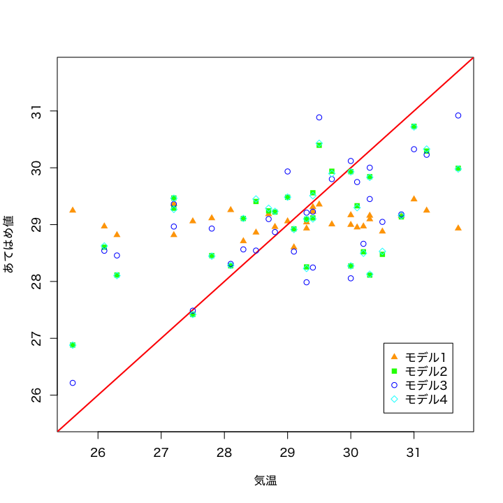

回帰モデルの考え方と推定
(Press ? for help, n and p for next and previous slide)
村田 昇
回帰式 : \(y\) を \(x_{1},\dotsc,x_{p}\) で説明するための関係式
\begin{equation} y=f(x_{1},\dotsc,x_{p}) \end{equation}
観測データ : n個の \((y,x_{1},\dotsc,x_{p})\) の組
\begin{equation} \{(y_i,x_{i1},\dotsc,x_{ip})\}_{i=1}^n \end{equation}
\(f\) として 1次関数 を考える
ある定数 \(\beta_{0},\beta_{1},\dots,\beta_{p}\) を用いた式 :
\begin{equation} f(x_{1},\dots,x_{p})=\beta_{0}+\beta_{1}x_{1}+\cdots+\beta_{p}x_{p} \end{equation}
線形回帰式
\begin{equation} y=\beta_{0}+\beta_{1}x_{1}+\cdots+\beta_{p}x_{p} \end{equation}
線形回帰分析 (linear regression analysis)
未知の回帰係数をデータから決定する分析方法
確率モデル : データのばらつきを表す項 \(\epsilon_i\) を追加
\begin{equation} y_i=\beta_{0}+\beta_{1} x_{i1}+\cdots+\beta_{p}x_{ip}+\epsilon_i\quad (i=1,\dots,n) \end{equation}
回帰係数 \(\boldsymbol{\beta}=(\beta_{0},\beta_{1},\dotsc,\beta_{p})^{\mathsf{T}}\) を持つ回帰式の残差
\begin{equation} e_i(\boldsymbol{\beta})= y_i-(\beta_{0}+\beta_{1} x_{i1}+\dotsb+\beta_{p}x_{ip}) \quad (i=1,\dotsc,n) \end{equation}
残差平方和 (residual sum of squares)
\begin{equation} S(\boldsymbol{\beta}) = \sum_{i=1}^ne_i(\boldsymbol{\beta})^2 \end{equation}
最小二乗推定量 (least squares estimator)
残差平方和 \(S(\boldsymbol{\beta})\) を最小にする \(\boldsymbol{\beta}\)
\begin{equation} \boldsymbol{\hat{\beta}} = (\hat{\beta}_{0},\hat{\beta}_{1},\dotsc,\hat{\beta}_{p})^{\mathsf{T}} = \arg\min_{\boldsymbol{\beta}}S(\boldsymbol{\beta}) \end{equation}
デザイン行列 (design matrix)
\begin{equation} X= \begin{pmatrix} 1 & x_{11} & x_{12} & \cdots & x_{1p} \\ 1 & x_{21} & x_{22} & \cdots & x_{2p} \\ \vdots & \vdots & \vdots & & \vdots \\ 1 & x_{n1} & x_{n2} & \cdots & x_{np} \end{pmatrix} \end{equation}
目的変数，誤差，回帰係数のベクトル
\begin{equation} \boldsymbol{y}= \begin{pmatrix} y_{1} \\ y_{2} \\ \vdots \\ y_{n} \end{pmatrix},\quad \boldsymbol{\epsilon}= \begin{pmatrix} \epsilon_{1} \\ \epsilon_{2} \\ \vdots \\ \epsilon_{n} \end{pmatrix},\quad \boldsymbol{\beta}= \begin{pmatrix} \beta_{0} \\ \beta_{1} \\ \vdots \\ \beta_{p} \end{pmatrix} \end{equation}
確率モデル
\begin{equation} \boldsymbol{y} =X\boldsymbol{\beta}+\boldsymbol{\epsilon} \end{equation}
残差平方和
\begin{equation} S(\boldsymbol{\beta}) =(\boldsymbol{y}-X\boldsymbol{\beta})^{\mathsf{T}} (\boldsymbol{y}-X\boldsymbol{\beta}) \end{equation}
解 \(\boldsymbol{\beta}\) では残差平方和の勾配は零ベクトル
\begin{equation} \frac{\partial}{\partial\boldsymbol{\beta}}S(\boldsymbol{\beta}) = \Bigl( \frac{\partial S}{\partial\beta_{0}}(\boldsymbol{\beta}), \frac{\partial S}{\partial\beta_{1}}(\boldsymbol{\beta}),\dotsc, \frac{\partial S}{\partial\beta_{p}}(\boldsymbol{\beta}) \Bigr)^{\mathsf{T}} =\boldsymbol{0} \end{equation}
残差平方和を展開しておく
\begin{align} S(\boldsymbol{\beta}) &= (\boldsymbol{y}-X\boldsymbol{\beta})^{\mathsf{T}} (\boldsymbol{y}-X\boldsymbol{\beta})\\ &= \boldsymbol{y}^{\mathsf{T}}\boldsymbol{y} -\boldsymbol{y}^{\mathsf{T}}X\boldsymbol{\beta} -(X\boldsymbol{\beta})^{\mathsf{T}}\boldsymbol{y} +(X\boldsymbol{\beta})^{\mathsf{T}}X\boldsymbol{\beta}\\ &= \boldsymbol{y}^{\mathsf{T}}\boldsymbol{y} -\boldsymbol{y}^{\mathsf{T}}X\boldsymbol{\beta} -\boldsymbol{\beta}^{\mathsf{T}}X^{\mathsf{T}}\boldsymbol{y} +\boldsymbol{\beta}^{\mathsf{T}}X^{\mathsf{T}}X\boldsymbol{\beta}\\ \end{align}
ベクトルによる微分を行うと以下のようになる
\begin{align} \frac{\partial}{\partial\boldsymbol{\beta}}S(\boldsymbol{\beta}) &= -(\boldsymbol{y}^{\mathsf{T}}X)^{\mathsf{T}} -X^{\mathsf{T}}\boldsymbol{y} +(X^{\mathsf{T}}X+(X^{\mathsf{T}}X)^{\mathsf{T}})\boldsymbol{\beta}\\ &= -2X^{\mathsf{T}}\boldsymbol{y} +2X^{\mathsf{T}}X\boldsymbol{\beta} \end{align}
したがって \(\boldsymbol{\beta}\) の満たす条件は以下となる
\begin{equation} -2X^{\mathsf{T}}\boldsymbol{y} +2X^{\mathsf{T}}X\boldsymbol{\beta} =0 \quad\text{ より } \end{equation}\begin{equation} X^{\mathsf{T}}X\boldsymbol{\beta} = X^{\mathsf{T}}\boldsymbol{y} \end{equation}
成分ごとの計算は以下のようになる
\begin{equation} \frac{\partial S}{\partial\beta_j}(\boldsymbol{\beta}) = -2\sum_{i=1}^n\Bigl(y_i-\sum_{k=0}^p\beta_kx_{ik}\Bigr)x_{ij} =0 \end{equation}ただし， \(x_{i0}=1\; (i=1,\dotsc,n)\), \(j=0,1,\dotsc,p\)
\begin{equation} \sum_{i=1}^nx_{ij}\Bigl(\sum_{k=0}^px_{ik}\beta_k\Bigr) = \sum_{i=1}^nx_{ij}y_i\quad(j=0,1,\dotsc,p) \end{equation}\(x_{ij}\) は行列 \(X\) の \((i,j)\) 成分であることに注意
正規方程式 (normal equation)
\begin{equation} X^{\mathsf{T}}X\boldsymbol{\beta} =X^{\mathsf{T}}\boldsymbol{y} \end{equation}
正規方程式の解
\begin{equation} \boldsymbol{\hat{\beta}} = (X^{\mathsf{T}}X)^{-1}X^{\mathsf{T}}\boldsymbol{y} \end{equation}
最小二乗推定量がただ一つだけ存在する条件
これらは同値条件
あてはめ値 / 予測値 (fitted values / predicted values)
\begin{equation} \boldsymbol{\hat{y}} = X\boldsymbol{\hat{\beta}} = \hat{\beta}_{0} X_\text{第0列} + \dots + \hat{\beta}_{p} X_\text{第p列} \end{equation}

Figure 1: \(n=3\) , \(p+1=2\) の場合の最小二乗法による推定
残差 (residuals) \(\boldsymbol{\hat{\epsilon}}=\boldsymbol{y}-\boldsymbol{\hat{y}}\) はあてはめ値 \(\boldsymbol{\hat{y}}\) に直交
\begin{equation} \boldsymbol{\hat{\epsilon}}\cdot\boldsymbol{\hat{y}}=0 \end{equation}
説明変数および目的変数の標本平均
\begin{align} \boldsymbol{\bar{x}} &=\frac{1}{n}\sum_{i=1}^n\boldsymbol{x}_i, &\bar{y} % \overline{\boldsymbol{x}^2}&=\frac{1}{n}\sum_{i=1}^n\boldsymbol{x}_i\boldsymbol{x}_i^{\mathsf{T}},& &=\frac{1}{n}\sum_{i=1}^ny_i,& % \overline{\boldsymbol{x}y}&=\frac{1}{n}\sum_{i=1}^n\boldsymbol{x}_iy_i \end{align}
\(\boldsymbol{\hat{\beta}}\) が最小二乗推定量のとき以下が成立
\begin{equation} \bar{y} = (1,\boldsymbol{\bar{x}}^{\mathsf{T}})\boldsymbol{\hat{\beta}} \end{equation}
残差の標本平均が0となる
以下を示せばよい
\begin{equation} \boldsymbol{1}^{\mathsf{T}}(\boldsymbol{y}-\boldsymbol{\hat{y}}) =\boldsymbol{1}^{\mathsf{T}}\boldsymbol{\hat{\epsilon}} =0 \end{equation}ただし \(\boldsymbol{1}=(1,\dotsc,1)^{\mathsf{T}}\) とする
回帰式が標本平均を通る
\begin{equation} \bar{y} = (1,\boldsymbol{\bar{x}}^{\mathsf{T}})\boldsymbol{\hat{\beta}} \end{equation}
残差の表現を整理する
\begin{align} \boldsymbol{\hat{\epsilon}} &= \boldsymbol{y}-\boldsymbol{\hat{y}} = \boldsymbol{y}-X\boldsymbol{\hat{\beta}}\\ &= \boldsymbol{y}-X(X^{\mathsf{T}}X)^{-1}X^{\mathsf{T}}\boldsymbol{y} \end{align}
左から \(X^{\mathsf{T}}\) を乗じる
\begin{equation} X^{\mathsf{T}}\boldsymbol{y}-X^{\mathsf{T}}X(X^{\mathsf{T}}X)^{-1}X^{\mathsf{T}}\boldsymbol{y} = X^{\mathsf{T}}\boldsymbol{y}-X^{\mathsf{T}}\boldsymbol{y} =0 \end{equation}
説明変数の標本平均をデザイン行列で表す
\begin{equation} \boldsymbol{1}^{\mathsf{T}}X = n(1,\boldsymbol{\bar{x}}^{\mathsf{T}}) \end{equation}
したがって以下が成立する
\begin{align} n(1,\boldsymbol{\bar{x}}^{\mathsf{T}})\boldsymbol{\hat{\beta}} &= \boldsymbol{1}^{\mathsf{T}}X\boldsymbol{\hat{\beta}}\\ &= \boldsymbol{1}^{\mathsf{T}}\boldsymbol{\hat{y}} = \boldsymbol{1}^{\mathsf{T}}\boldsymbol{y}\\ &= n\bar{y} \end{align}
観測値と推定値 \(\boldsymbol{\hat{\beta}}\) によるあてはめ値の差
\begin{equation} \hat{\epsilon}_i= y_i-(\hat{\beta}_{0}+\hat{\beta}_{1} x_{i1}+\dotsb+\hat{\beta}_{p}x_{ip}) \quad (i=1,\dotsc,n) \end{equation}
残差ベクトル
\begin{equation} \boldsymbol{\hat{\epsilon}} =\boldsymbol{y}-\boldsymbol{\hat{y}} =(\hat{\epsilon}_{1},\hat{\epsilon}_{2},\dotsc,\hat{\epsilon}_{n})^{\mathsf{T}} \end{equation}
3つのばらつき(平方和)の関係
\begin{equation} (\boldsymbol{y}-\bar{\boldsymbol{y}})^{\mathsf{T}} (\boldsymbol{y}-\bar{\boldsymbol{y}}) = (\boldsymbol{y}-\boldsymbol{\hat{y}})^{\mathsf{T}} (\boldsymbol{y}-\boldsymbol{\hat{y}})+ (\boldsymbol{\hat{y}}-\bar{\boldsymbol{y}})^{\mathsf{T}} (\boldsymbol{\hat{y}}-\bar{\boldsymbol{y}}) \end{equation}\begin{equation} S_y=S+S_r \end{equation}
あてはめ値と残差のベクトルが直交する
\begin{equation} \boldsymbol{\hat{y}}^{\mathsf{T}}(\boldsymbol{y}-\boldsymbol{\hat{y}}) = \boldsymbol{\hat{y}}^{\mathsf{T}}\boldsymbol{\hat{\epsilon}} =0 \end{equation}
残差平方和の分解が成り立つ
\begin{equation} S_y=S+S_r \end{equation}
残差の表現を整理する
\begin{align} \boldsymbol{\hat{\epsilon}} &= \boldsymbol{y}-X(X^{\mathsf{T}}X)^{-1}X^{\mathsf{T}}\boldsymbol{y}\\ &= (I-X(X^{\mathsf{T}}X)^{-1}X^{\mathsf{T}})\boldsymbol{y} \end{align}
左から \(\boldsymbol{\hat{y}}\) を乗じる
\begin{align} \boldsymbol{\hat{y}}^{\mathsf{T}}\boldsymbol{\hat{\epsilon}} &= \boldsymbol{\hat{\beta}}^{\mathsf{T}}X^{\mathsf{T}} (I-X(X^{\mathsf{T}}X)^{-1}X^{\mathsf{T}})\boldsymbol{y}\\ &= \boldsymbol{\hat{\beta}}^{\mathsf{T}} (X^{\mathsf{T}}-X^{\mathsf{T}}X(X^{\mathsf{T}}X)^{-1}X^{\mathsf{T}})\boldsymbol{y}\\ &= \boldsymbol{\hat{\beta}}^{\mathsf{T}} (X^{\mathsf{T}}-X^{\mathsf{T}})\boldsymbol{y}=0 \end{align}
以下の関係を用いて展開すればよい
\begin{equation} \boldsymbol{y}-\bar{\boldsymbol{y}} =\boldsymbol{y}-\boldsymbol{\hat{y}}+\boldsymbol{\hat{y}}-\bar{\boldsymbol{y}} \end{equation}ただし \(\bar{\boldsymbol{y}}=\bar{y}\boldsymbol{1}\)
このとき以下の項は0になる
\begin{equation} (\boldsymbol{\hat{y}}-\bar{\boldsymbol{y}})^{\mathsf{T}} (\boldsymbol{y}-\boldsymbol{\hat{y}}) = \boldsymbol{\hat{y}}^{\mathsf{T}} (\boldsymbol{y}-\boldsymbol{\hat{y}}) - \bar{y}\boldsymbol{1}^{\mathsf{T}} (\boldsymbol{y}-\boldsymbol{\hat{y}}) =0 \end{equation}
ばらつきの分解
\begin{equation} S_y\;\text{(目的変数)} =S\;\text{(残差)} +S_r\;\text{(あてはめ値)} \end{equation}
回帰式で説明できるばらつきの比率
\begin{equation} \text{(回帰式の寄与率)} = \frac{S_{r}}{S_{y}} = 1-\frac{S}{S_{y}} \end{equation}
決定係数 (R-squared)
\begin{equation} R^2 = 1-\frac{\sum_{i=1}^n\hat{\epsilon}_i^2}{\sum_{i=1}^n(y_i-\bar{y})^2} \end{equation}
自由度調整済み決定係数 (adjusted R-squared)
\begin{equation} \bar{R}^2 = 1-\frac{\frac{1}{n{-}p{-}1}\sum_{i=1}^n\hat{\epsilon}_i^2} {\frac{1}{n{-}1}\sum_{i=1}^n(y_i-\bar{y})^2} \end{equation}
気候 (気温,降雨,日射,降雪,風向,風速,気圧,湿度,雲量)
に関するデータ(の一部)
month day day_of_week temp rain solar snow wdir wind press
213 8 1 Sun 28.7 0.0 26.58 0 SSE 3.2 1000.2
214 8 2 Mon 28.6 0.5 19.95 0 SE 3.4 1006.1
215 8 3 Tue 29.0 3.0 19.89 0 S 4.0 1009.9
216 8 4 Wed 29.5 0.0 26.52 0 S 3.0 1008.2
217 8 5 Thu 29.1 0.0 26.17 0 SSE 2.8 1005.1
218 8 6 Fri 29.1 0.0 24.82 0 SSE 2.9 1004.2
219 8 7 Sat 27.9 2.0 11.43 0 NE 2.5 1003.1
220 8 8 Sun 25.9 90.5 3.43 0 N 3.0 998.0
221 8 9 Mon 28.1 2.0 13.34 0 S 6.1 995.4
222 8 10 Tue 31.0 0.0 22.45 0 SSW 4.7 996.3
223 8 11 Wed 29.2 0.0 21.12 0 SE 2.9 1008.0
224 8 12 Thu 26.0 0.5 8.34 0 SSE 2.4 1008.8
225 8 13 Fri 22.5 20.5 4.36 0 NE 2.7 1008.0
226 8 14 Sat 22.3 77.0 2.76 0 N 2.7 1003.6
humid cloud
213 76 2.3
214 80 7.0
215 80 6.3
216 76 2.8
217 74 5.8
218 75 4.0
219 85 9.0
220 97 10.0
221 84 6.0
222 58 4.8
223 61 9.3
224 84 9.5
225 97 10.0
226 100 10.0
関連するデータの散布図

Figure 2: 散布図
モデル1の推定結果

Figure 3: モデル1
モデル2の推定結果

Figure 4: モデル2
モデル3の推定結果

Figure 5: モデル3
観測値とあてはめ値の比較

Figure 6: モデルの比較
モデル1 : 気温 = F(気圧)
[1] "R2: 0.0483 ; adj. R2: 0.0155"
モデル2 : 気温 = F(日射)
[1] "R2: 0.663 ; adj. R2: 0.651"
モデル3 : 気温 = F(気圧, 日射)
[1] "R2: 0.703 ; adj. R2: 0.681"
モデル4 : 気温 = F(気圧, 日射, 湿度)
[1] "R2: 0.83 ; adj. R2: 0.811"
モデル5 : 気温 = F(気圧, 日射, 雲量)
[1] "R2: 0.703 ; adj. R2: 0.67"